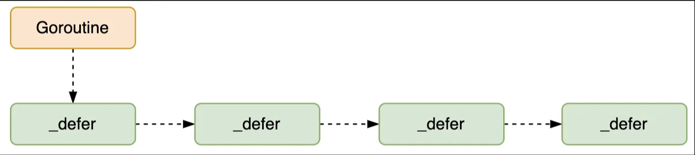

Ch02-GoLang 之 defer
September 28, 2024
Go 语言的 defer 会在当前函数返回前执行传入的函数，它会经常被用于关闭文件描述符、关闭数据库连接以及解锁资源。
Go 在 1.13 版本 与 1.14 版本对 defer 进行了两次优化，使得 defer 的性能开销在大部分场景下都得到大幅降低。
defer 定义 #
在 Go 语言的运行时源码（src/runtime/panic.go）中，_defer 结构体用于表示一个延迟调用。它包含了指向被延迟执行函数的指针、函数的参数以及指向链表中下一个 _defer 结构体的指针等信息。
type _defer struct {
siz int32 // 参数和结果的内存大小
started bool // 是否开始执行
heap bool
sp uintptr // 栈指针
pc uintptr // 调用方的程序计数器
fn *funcval // defer 关键字中传入的函数
_panic *_panic // G 上的 panic 执行时，导致程序流程终止，走到 defer 逻辑，defer 则会指向当前的 panic。这里可以理解为 当前的 defer 是由该 panic 触发的。
link *_defer // G 上的defer链表; 既可以指向堆也可以指向栈
}

runtime._defer 结构体是延迟调用链表上的一个元素，所有的结构体都会通过 link 字段串联成链表。
- 多个 defer 语句跟栈一样，按照先进后出的顺序执行
- defer 语句在函数返回值已经确定，但在返回前执行。这意味着 defer 可以修改返回值（如果返回值是命名的）。
- 即使函数发生 panic，defer 注册的函数依然会执行
版本优化 #
堆上分配 #
在 Go 1.13 之前所有 defer 都是在堆上分配，该机制在编译时：
- 在 defer 语句的位置插入 runtime.deferproc，被执行时，defer 调用会保存为一个 runtime._defer 结构体，存入 Goroutine 的_defer 链表的最前面；
- 在函数返回之前的位置插入runtime.deferreturn，被执行时，会从 Goroutine 的 _defer 链表中取出最前面的runtime._defer 并依次执行。
条件
如果 defer 语句中的函数存在闭包，且闭包引用了外部变量，或者函数的参数和返回值占用空间较大时，Go 编译器会在堆上分配 _defer 结构体。因为栈空间的大小是有限的，对于复杂的情况，堆空间更适合存储相关数据。在堆上分配的 _defer 结构体需要由垃圾回收器（GC）来回收内存。
示例
func run() {
value := 10
defer func() {
fmt.Println("Complex defer with closure:", value)
}()
// 函数其他逻辑
}
栈上分配 #
Go 1.13 版本新加入 deferprocStack 实现了在栈上分配 defer，相比堆上分配，栈上分配在函数返回后 _defer 便得到释放，省去了内存分配时产生的性能开销，只需适当维护 _defer 的链表即可。按官方文档的说法，这样做提升了约 30% 左右的性能。
值得注意的是，1.13 版本中并不是所有defer都能够在栈上分配。循环中的defer，无论是显示的for循环，还是goto形成的隐式循环，都只能使用堆上分配，即使循环一次也是只能使用堆上分配。
条件
当 defer 语句中的函数调用比较简单，且没有闭包引用外部变量，同时函数的参数和返回值占用空间较小时，Go 编译器会尝试在栈上分配 _defer 结构体。这种情况下，_defer 结构体的生命周期与所在函数的栈帧绑定，函数返回时，_defer 结构体所占用的栈空间会随着栈帧的销毁而释放，无需垃圾回收机制参与，从而提高了性能。
示例
func run() {
defer fmt.Println("Simple defer")
// 函数其他逻辑
}
开放编码(也叫内联优化) #
Go 1.14 版本加入了开发编码（open coded），该机制会defer调用直接插入函数返回之前，省去了运行时的 deferproc 或 deferprocStack 操作。，该优化可以将 defer 的调用开销从 1.13 版本的 ~35ns 降低至 ~6ns 左右。
对于一些短小的 defer 函数，Go 编译器可能会进行内联优化，即将 defer 函数的代码直接嵌入到调用点，而不是生成常规的函数调用指令。这样做可以避免函数调用的开销，如栈帧的创建和销毁、参数传递等，从而提高程序的执行效率。
条件
不过需要满足一定的条件才能触发：
- 没有禁用编译器优化，即没有设置 -gcflags “-N”；
- 函数内 defer 的数量不超过 8 个，且return语句与defer语句个数的乘积不超过 15；
- 函数的 defer 关键字不能在循环中执行；
示例
func run() {
defer func() {
// 简单的操作，适合内联
i := 1 + 2
fmt.Println("Small defer:", i)
}()
// 函数其他逻辑
}
参考文献 #
常见的坑 #
- defer 多层函数嵌套，函数执行的时机问题
我们都知道 defer 实在函数执行结束后才执行，那么按照下述代码的执行顺序应该是 step1->step3->step4->step2。但是亲自执行过之后就会发现不是这样的，当函数执行到 defer close(to(start))，但时，会先把 to(start) 全部执行完成，等函数执行结束之后，才会执行 close(xxx) 函数。所以它的打印顺序是 step1->step2->step3->step4
func to(now time.Time) time.Time {
fmt.Println("step2, ", now)
return now
}
func close(start time.Time) {
fmt.Println("step4", time.Since(start))
}
func run() {
start := time.Now()
fmt.Println("step1, ", start)
defer close(to(start))
time.Sleep(5 * time.Second)
fmt.Println("step3")
}